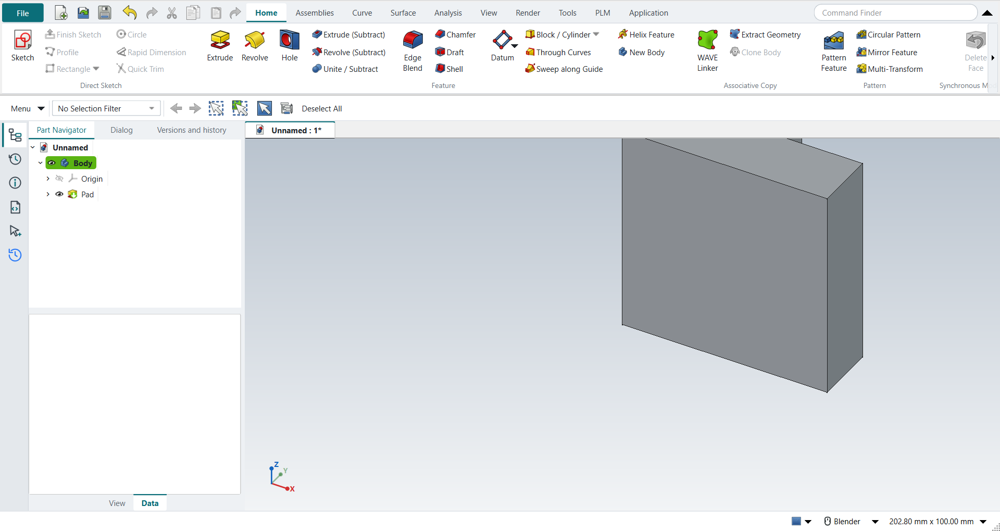

Your first part in five minutes
This page builds a small block with a slot, using NX’s keys and mouse buttons. Every step here is one that the tutorial replay presses and checks (Tutorial A).
Start NX-Style first (Installation).
1. A new part
Press Ctrl+N.
NX-Style’s New works like NX’s Model template: the new part already has a Body, ready to sketch on. Units are millimetres.
2. Extrude, starting from a sketch
With nothing selected, press X (Extrude).
The Dialog panel on the left asks for a sketch plane. Click XY_Plane in its list (or click the plane in the graphics window) and press MB2 (the middle mouse button) for OK. The Sketch task environment opens, with the contextual Sketch tab on the ribbon.
3. Draw a rectangle
-
Press R (Rectangle).
-
Click two opposite corners with MB1 in the graphics window.
-
Press MB2 to end the Rectangle tool.
4. Give it sizes
Press D (Rapid Dimension), click an edge, type a value and press Enter. Do the same for the other side.
| FreeCAD’s dimension tool asks for one value at a time. NX’s dynamic dimensions while you draw, and its "scale the whole sketch?" prompt, do not exist here. |
5. Finish the sketch: straight into Extrude
Press Ctrl+Q (Finish Sketch).
As in NX, finishing the sketch carries straight on into the Extrude dialog. Type the distance into the length field and press MB2 for OK.

6. Cut a slot into a face
-
Click the face to cut into.
-
On the ribbon, click Home › Feature › Extrude (Subtract). The sketch opens on that face.
-
R, two clicks, MB2; give it its sizes with D.
-
Ctrl+Q, type the depth, MB2.
| FreeCAD’s Extrude has no Boolean option: the subtracting extrude is its own button, Extrude (Subtract), and it cuts into the part without a Reverse Direction. |
7. Look at it and save
-
Drag with MB2 to rotate, Shift+MB2 to pan, roll the wheel to zoom (Mouse and view control).
-
Home gives the trimetric view, End the isometric one, Ctrl+F fits the part in the window.
-
Ctrl+S saves. The file is a FreeCAD
.FCStdfile.
Next
-
The user interface — what the ribbon, the bars and the navigators hold.
-
Tutorials — fourteen textbook exercises, from this one to assemblies and GD&T drawings.
-
Keyboard shortcuts — every key.